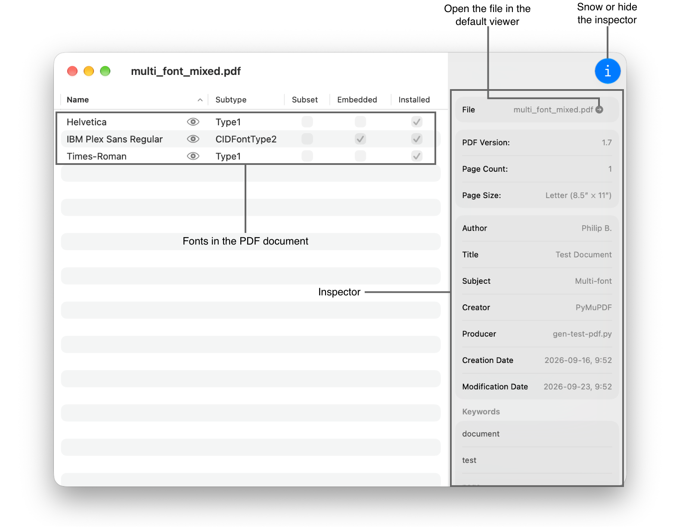
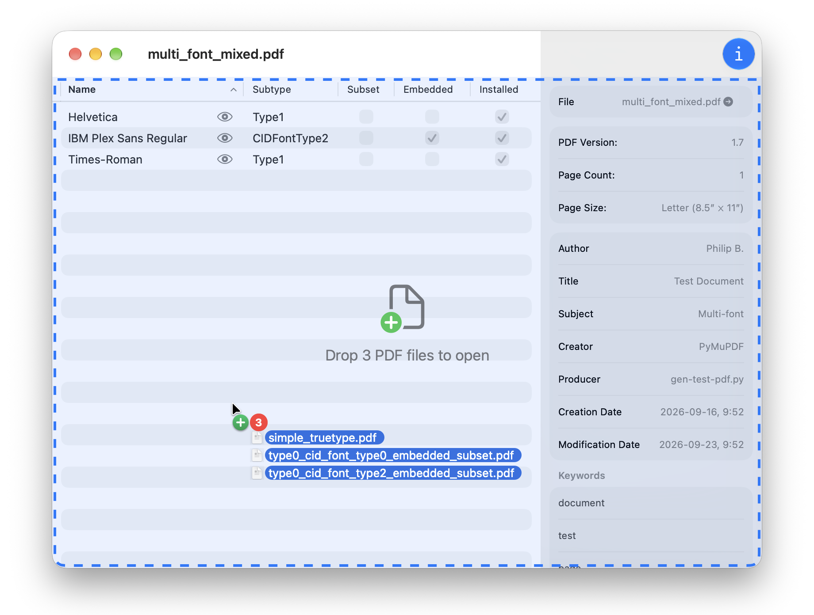

PDF Info shows a table of all fonts in the PDF document.

You can open PDF files by right clicking on a PDF file in the Finder and selecting "PDF Info" from the "Open With" menu.
Additionally, you can also drag PDF files to a window to an open document window have the app open each document in its own window:

The inspector can be shown or hidden by clicking on the "i" button.